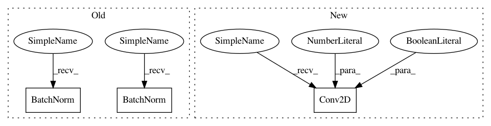

88f5086454759b4e213013cb1bc177df183b43b2,gluoncv/model_zoo/resnetv1b.py,BottleneckV1b,__init__,#BottleneckV1b#Any#Any#Any#Any#Any#Any#Any#Any#,58
Before Change
self.conv3 = nn.Conv2D(
in_channels=planes, channels=planes * 4, kernel_size=1, use_bias=False)
if not last_gamma:
self.bn3 = nn.BatchNorm(in_channels=planes * 4)
else:
self.bn3 = nn.BatchNorm(in_channels=planes * 4, gamma_initializer="zeros")
self.relu = nn.Activation("relu")
self.downsample = downsample
self.dilation = dilation
self.strides = strides
After Change
padding=dilation, dilation=dilation, use_bias=False)
self.bn1 = norm_layer(in_channels=planes, use_global_stats=use_global_stats)
self.relu = nn.Activation("relu")
self.conv2 = nn.Conv2D(in_channels=planes, channels=planes, kernel_size=3, strides=1,
padding=previous_dilation, dilation=previous_dilation,
use_bias=False)
self.bn2 = norm_layer(in_channels=planes, use_global_stats=use_global_stats)
self.downsample = downsample
self.strides = strides
In pattern: SUPERPATTERN
Frequency: 3
Non-data size: 3
Instances
Project Name: dmlc/gluon-cv
Commit Name: 88f5086454759b4e213013cb1bc177df183b43b2
Time: 2018-07-18
Author: 13162287+ijkguo@users.noreply.github.com
File Name: gluoncv/model_zoo/resnetv1b.py
Class Name: BottleneckV1b
Method Name: __init__
Project Name: dmlc/gluon-cv
Commit Name: 88f5086454759b4e213013cb1bc177df183b43b2
Time: 2018-07-18
Author: 13162287+ijkguo@users.noreply.github.com
File Name: gluoncv/model_zoo/resnetv1b.py
Class Name: BottleneckV1b
Method Name: __init__
Project Name: dmlc/gluon-cv
Commit Name: 2318052dc79966bf36675606b7d992a347418292
Time: 2019-01-07
Author: cheungchih@gmail.com
File Name: gluoncv/model_zoo/nasnet.py
Class Name: BranchSeparables
Method Name: __init__
Project Name: dmlc/gluon-cv
Commit Name: 2318052dc79966bf36675606b7d992a347418292
Time: 2019-01-07
Author: cheungchih@gmail.com
File Name: gluoncv/model_zoo/nasnet.py
Class Name: BranchSeparablesReduction
Method Name: __init__